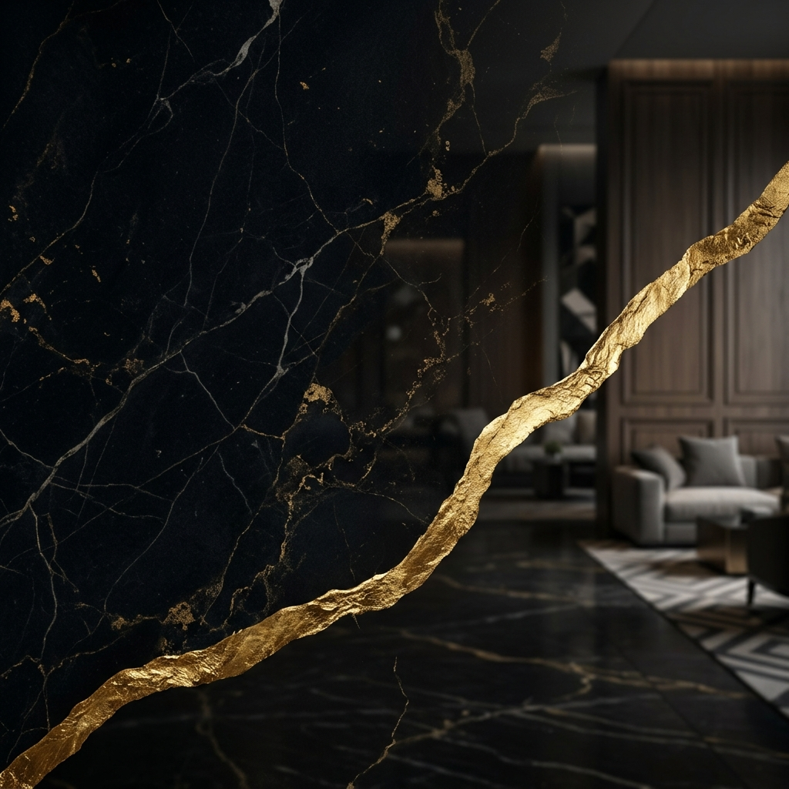

O Guia Estratégico para Prosperar no Caos
Diferente da resiliência, a antifragilidade não é sobre resistir ao impacto. É sobre usar a pressão como combustível para a evolução.
Sistemas antifrágeis se tornam superiores após o estresse.
Teme a incerteza. Quebra diante do inesperado.
Suporta o peso. Absorve o choque, mas permanece igual.
Ama o erro. Cada falha é uma peça de um sistema mais forte.
Não é a inteligência que vence, mas a velocidade de resposta às mudanças.
Antecipar tendências e ajustar a rota antes que o mercado exija.
Extrair sabedoria bruta de cada tentativa frustrada.
Volatilidade
Velocidade das mudanças
Incerteza
Imprevisibilidade total
Complexidade
Múltiplas conexões
Ambiguidade
Falta de clareza
Otimismo, comunicação e movimento constante.
Liderança nata, foco em resultados e execução.
Equilíbrio, paciência e mediação de conflitos.
Planejamento, profundidade e atenção aos detalhes.
Interpessoal: O elo que une a equipe através da empatia.
Sequencial: A ordem e a organização que garantem a segurança.
Imaginativo: A visão de futuro que rompe barreiras.
Analítico: A lógica implacável que disseca o problema.
A consciência de que você é o único responsável pelos seus resultados.
A base inabalável para tomar decisões difíceis sob pressão.
A execução consistente, mesmo quando a motivação desaparece.
O compromisso eterno com a maestria e o aprendizado contínuo.
"Se você acredita que é capaz, ou não acredita que é capaz, em ambos os casos você estará certo."
Liderança Antifrágil | ViDi 2026